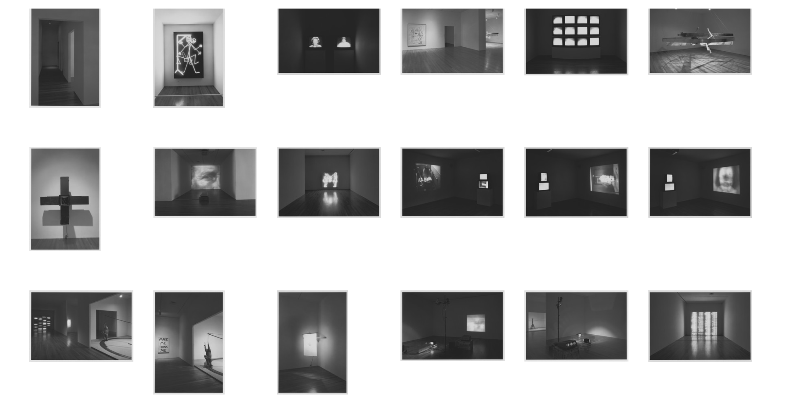

Bruce Nauman — Get Out of My Mind, Get Out of This Room
In this installation, Bruce Nauman uses a repeated recorded voice within an enclosed room. The words are delivered in different tones, creating an experience that can feel confrontational, uncomfortable, and psychologically intrusive.
What interested me most was how the work creates a strong emotional response without relying on complicated visual elements. The space itself becomes part of the experience.
This made me think about how disruptive sounds can create an invisible sense of pressure. We could explore how repetition, spatial restriction, and proximity might be represented visually.

Bruce Nauman / Sound Installation